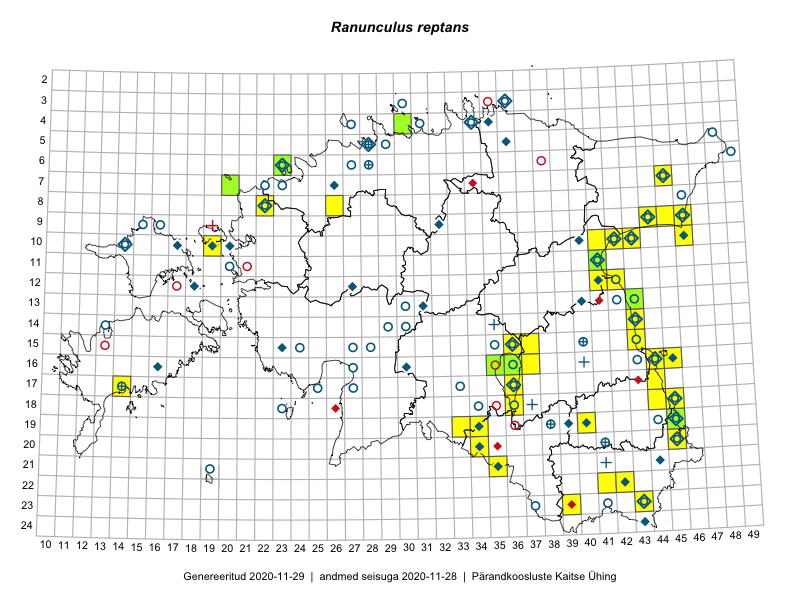

Ranunculus reptans
Uuendatud: 2016-12-02
Kaardile koondatud taksonid: Ranunculus reptans L.

Kaart põhineb 51 kirjel, neist vaatlusi 49 ja eksemplare 2. Taksonit on leitud 25 ruudust.
Kuvatud viited 20 esimesele andmebaasikirjele, ülejäänud PlutoFis
- Peedu Saar, Liina Oja: 2015-07-24: 09-45: GPS punkt
- Peedu Saar: 2015-07-04: 18-45: GPS punkt
- Peedu Saar: 2015-07-04: 18-44: GPS punkt
- Peedu Saar: 2015-07-04: 18-45: ala
- Peedu Saar: 2015-07-04: 18-44: ala
- Toomas Kukk, Eerik Leibak: 2015-07-29: 16-45: ala
- Toomas Kukk, Eerik Leibak: 2015-07-29: 16-44: ala
- Malle Leht: 2015-07-27: 18-40: ala
- Toomas Kukk, Eerik Leibak: 2015-07-29: 16-44: GPS punkt
- Peedu Saar, Liina Oja: 2015-07-24: 09-45: ala
- Katrit Karus, Tõnu Feldmann: 2015-07-27: 20-45: ala
- Tõnu Feldmann, Katrit Karus: 2015-07-30: 20-34: ala
- Tõnu Feldmann, Katrit Karus: 2015-07-27: 19-45: ala
- Peedu Saar, Ott Luuk: 2015-09-03: 04-30: ala
- Ott Luuk, Hannes Pehlak: 2015-07-24: 09-44: ala
- Toomas Kukk, Timo Luhamäe, Kersti Tambets, Sten Mander, Janika Sammasto: 2014-07-29: 19-45: ala
- Oliver Parrest: 2015-07-01: 19-13: ala
- Ulvi Selgis: 2016-08-16: 11-41: GPS punkt
- Kai Rünk, Ülle Jõgar, Illi Tarmu: 2015-07-29T12:00Z: 10-41: ala
- Kai Rünk, Ülle Jõgar, Illi Tarmu: 2015-07-29T07:00Z: 10-42: ala